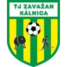

Tabuľky
Ročník 2026/27. Poradie podľa Sportnetu, náš tím je zvýraznený.
A-mužstvo
Stránka tímuVI. liga Sever
| # | Tím | Z | V | R | P | Skóre | B |
|---|---|---|---|---|---|---|---|
| 1 | 12 | 9 | 3 | 0 | 45:7 | 30 | |
| 2 | 12 | 10 | 0 | 2 | 37:11 | 30 | |
| 3 | 12 | 7 | 2 | 3 | 37:18 | 23 | |
| 4 | 12 | 6 | 3 | 3 | 18:13 | 21 | |
| 5 | TJ Spartak Lysá pod Makytou | 12 | 6 | 2 | 4 | 24:19 | 20 |
| 6 | 12 | 6 | 1 | 5 | 29:24 | 19 | |
| 7 | 12 | 5 | 3 | 4 | 20:25 | 18 | |
| 8 | 12 | 5 | 2 | 5 | 25:14 | 17 | |
| 9 | 12 | 4 | 1 | 7 | 26:30 | 13 | |
| 10 | 12 | 4 | 0 | 8 | 16:40 | 12 | |
| 11 | 12 | 3 | 1 | 8 | 23:41 | 10 | |
| 12 | 12 | 2 | 1 | 9 | 21:43 | 7 | |
| 13 | 12 | 1 | 1 | 10 | 11:47 | 4 | |
| 14 | 0 | 0 | 0 | 0 | 0:0 | 0 |
Starší žiaci U15
Stránka tímuIV. liga starších žiakov U15
| # | Tím | Z | V | R | P | Skóre | B |
|---|---|---|---|---|---|---|---|
| 1 | 12 | 12 | 0 | 0 | 78:11 | 36 | |
| 2 | 12 | 10 | 0 | 2 | 72:30 | 30 | |
| 3 | 12 | 7 | 0 | 5 | 38:29 | 21 | |
| 4 | TJ Iskra Moravské Lieskové | 11 | 5 | 1 | 5 | 30:34 | 16 |
| 5 | 11 | 4 | 1 | 6 | 46:57 | 13 | |
| 6 | 11 | 4 | 1 | 6 | 35:56 | 13 | |
| 7 | 12 | 3 | 1 | 8 | 12:55 | 10 | |
| 8 | 11 | 3 | 0 | 8 | 26:38 | 9 | |
| 9 | 12 | 1 | 2 | 9 | 28:55 | 5 |
Mladší žiaci U13
Stránka tímuIV. liga mladších žiakov U13
| # | Tím | Z | V | R | P | Skóre | B |
|---|---|---|---|---|---|---|---|
| 1 |  TJ Zavažan Kálnica | 9 | 7 | 0 | 2 | 24:11 | 21 |
| 2 | 9 | 6 | 0 | 3 | 35:19 | 18 | |
| 3 | 9 | 5 | 1 | 3 | 34:13 | 16 | |
| 4 | 9 | 5 | 1 | 3 | 42:18 | 16 | |
| 5 | 9 | 4 | 2 | 3 | 17:13 | 14 | |
| 6 | 9 | 3 | 0 | 6 | 22:37 | 9 | |
| 7 | 9 | 1 | 0 | 8 | 10:33 | 3 | |
| 8 | 9 | 0 | 0 | 9 | 7:65 | 0 |
U11, U9: prípravky hrajú bez tabuľky.